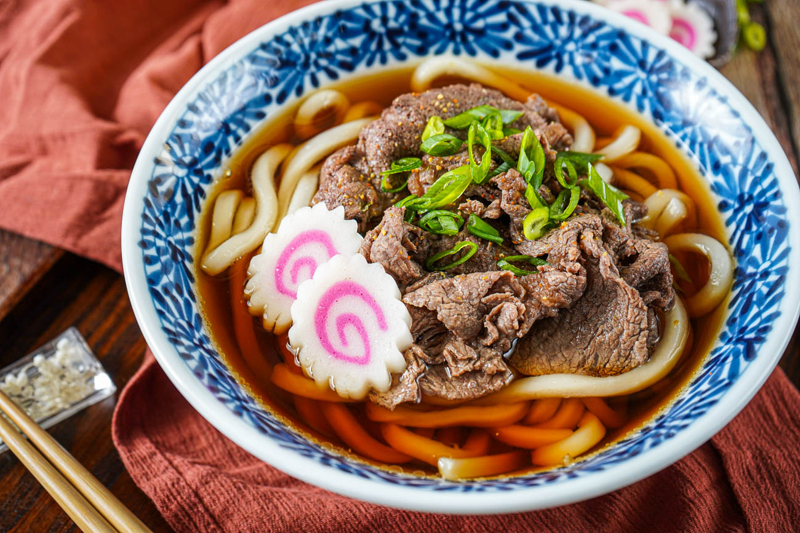

Udon
Home

Savory Beef Udon with a Light Broth
This comforting bowl of beef udon brings together tender slices of marinated beef,
thick chewy noodles, and a light, savory dashi-based broth that's both rich and delicate.
It's a balanced dish — warming yet not too heavy — perfect for a cozy dinner or a soothing midday meal.
The broth is infused with soy sauce, mirin, and a hint of sweetness to complement the umami of the beef,
and the noodles soak up the flavors beautifully without overpowering them.
Topping the bowl is a soft-poached or gently simmered egg that breaks into the broth,
adding a creamy depth, along with thinly sliced scallions for a touch of brightness.
Optional garnishes like toasted sesame seeds or a sprinkle of shichimi togarashi
(Japanese chili pepper mix) can elevate the dish even further.
Whether you're craving something satisfying yet not too bold,
or you're looking to bring a bit of Japanese comfort food to your kitchen,
this beef udon delivers warmth, texture, and flavor in every bite.
Ingredients (Serves 2)
For the Broth
- 2 cups dashi stock (instant dashi granules + water or homemade)
- 2 tablespoons light soy sauce
- 1 tablespoon mirin
- 1 teaspoon sugar
- 1/2 teaspoon sake (optional)
- Salt to taste
For the Beef
- 200g (about 7 oz) thinly sliced beef (ribeye or sirloin works well)
- 1 tablespoon soy sauce
- 1 tablespoon mirin
- 1 teaspoon sugar
- 1/2 teaspoon sesame oil
Noodles & Toppings
- 2 portions udon noodles (fresh, frozen, or pre-cooked)
- 2 eggs
- 1–2 scallions, thinly sliced
- Optional: toasted sesame seeds, shichimi togarashi (Japanese chili mix), nori strips
Instructions
1. Prepare the Broth
- In a small saucepan, combine dashi, soy sauce, mirin, sugar, and sake (if using).
- Bring to a gentle simmer over medium heat. Taste and adjust salt as needed. Keep warm on low heat.
2. Cook the Beef
- In a separate pan, heat a bit of sesame oil over medium heat.
- Add the beef slices and cook briefly until they begin to brown.
- Add soy sauce, mirin, and sugar to the beef. Cook for 1 to 2 more minutes until the liquid slightly reduces and coats the beef.
- Remove from heat and set aside.
3. Cook the Udon Noodles
If using frozen udon, cook according to package directions (usually 1 to 2 minutes in boiling water).
If using fresh or dried noodles, cook until just tender.
Drain and rinse lightly to remove excess starch. Divide into serving bowls.
4. Prepare the Eggs
-
Poached Method (Recommended):
- Bring a small pot of water to a light simmer.
- Crack each egg into a small bowl. Swirl the water gently and slide the egg in.
- Cook for 3 to 4 minutes until whites are set but yolk is still soft. Remove with a slotted spoon.
-
Alternative Soft Boiled Method:
- Boil eggs for 6 to 7 minutes, then transfer to an ice bath for a few minutes.
- Peel carefully.
5. Assemble the Dish
- Pour hot broth over the udon noodles in each bowl.
- Arrange the cooked beef on top.
- Gently place one egg on each bowl.
- Sprinkle sliced scallions over the top.
- Garnish with sesame seeds, a pinch of shichimi togarashi, or nori strips if desired.
Serving Tips
Serve immediately while hot. This dish pairs well with a side of pickled vegetables or
a small bowl of steamed rice if you're especially hungry. If you're making this for a group,
you can prep the broth and beef in advance and assemble just before serving.